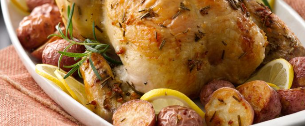
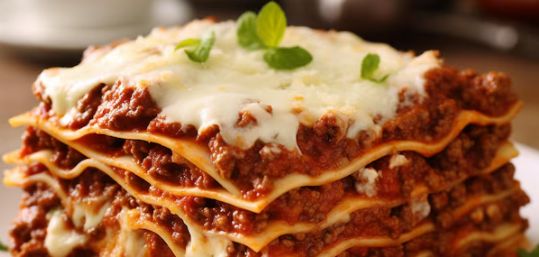
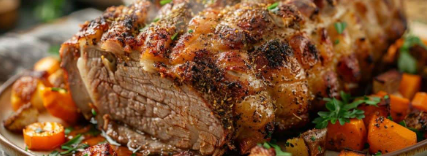
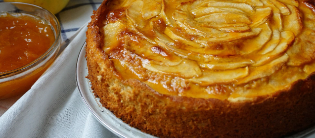

Pollo al horno con papas y romero

Pasos
- Precalentar el horno a 200 °C.
- Lavar y cortar las papas en cubos medianos.
- Colocar el pollo y las papas en una fuente para horno.
- Mezclar el aceite de oliva con el jugo de limón, el ajo picado, el pimentón, el romero, la sal y la pimienta.
- Distribuir la mezcla sobre el pollo y las papas.
- Hornear durante aproximadamente 45 minutos, dando vuelta el pollo a mitad de cocción.
- Retirar cuando el pollo esté dorado y las papas tiernas.
Lasagna de carne y mozzarella

Pasos
- Picar la cebolla y sofreírla en una sartén con aceite de oliva.
- Agregar la carne picada y cocinar hasta que esté dorada.
- Incorporar el tomate triturado, sal, pimienta y orégano.
- Cocinar la salsa a fuego medio durante unos 20 minutos.
- Cocinar las láminas de lasagna según las indicaciones del paquete.
- Colocar una capa de salsa de carne en una fuente para horno.
- Agregar una capa de pasta, bechamel y mozzarella.
- Repetir las capas hasta terminar los ingredientes.
- Cubrir con bechamel, mozzarella y queso rallado.
- Llevar al horno a 200 °C durante unos 25 minutos, hasta que la superficie esté dorada.
Carne al horno con verduras

Pasos
- Precalentar el horno a 200 °C.
- Condimentar la carne con sal, pimienta, pimentón, romero y ajo picado.
- Cortar las papas, zanahorias, cebolla y morrón en trozos medianos.
- Colocar las verduras en una fuente y agregar un poco de aceite de oliva.
- Colocar la carne sobre las verduras.
- Cubrir la fuente con papel aluminio y cocinar durante aproximadamente 45 minutos.
- Retirar el papel aluminio y continuar la cocción durante 20-30 minutos.
- Dejar reposar la carne unos minutos antes de cortarla y servirla junto con las verduras.
Tarta de manzana casera

Pasos
- Batir la manteca con el azúcar hasta obtener una mezcla cremosa.
- Agregar el huevo y la esencia de vainilla.
- Incorporar la harina y el polvo de hornear hasta formar una masa.
- Envolver la masa y dejarla reposar en la heladera durante 20 minutos.
- Pelar las manzanas y cortarlas en láminas finas.
- Estirar la masa y colocarla en un molde para tarta.
- Distribuir las manzanas sobre la masa y espolvorear con azúcar y canela.
- Cocinar en un horno precalentado a 180 °C durante 35-40 minutos.
- Dejar enfriar unos minutos antes de servir.